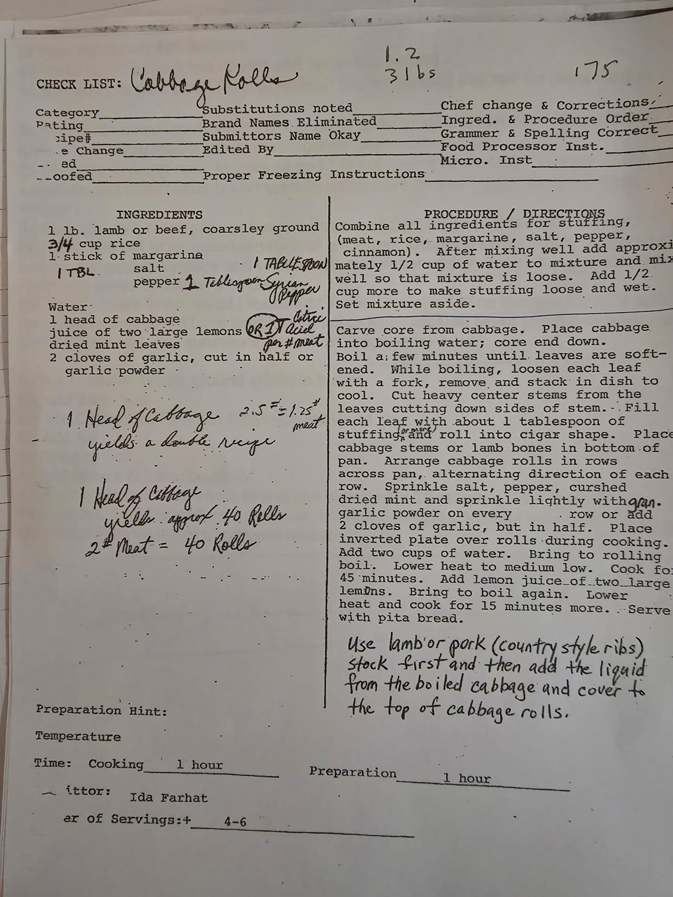

The Collection
Family Recipes

Lebanese
Cabbage Rolls
Stuffed cabbage leaves with lamb or beef, rice, and aromatic spices — served with pita bread.

Lebanese · Syrian
Hashwa
A fragrant spiced ground beef and rice stuffing — the heart of Lebanese cooking. Includes Syrian spice blend.

Lebanese
Lebanese Rice
Buttery rice toasted with golden orzo or vermicelli — the perfect accompaniment to any Lebanese dish.

Lebanese · Dessert
Batlawa
Crispy phyllo layered with walnuts and sugar, soaked in an orange blossom syrup. By Virginia Farhat.